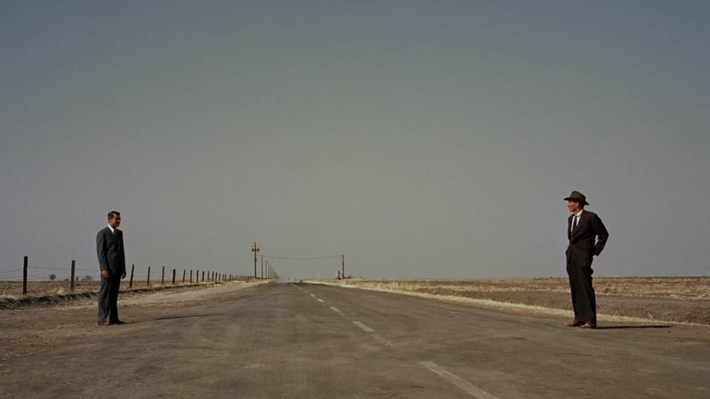
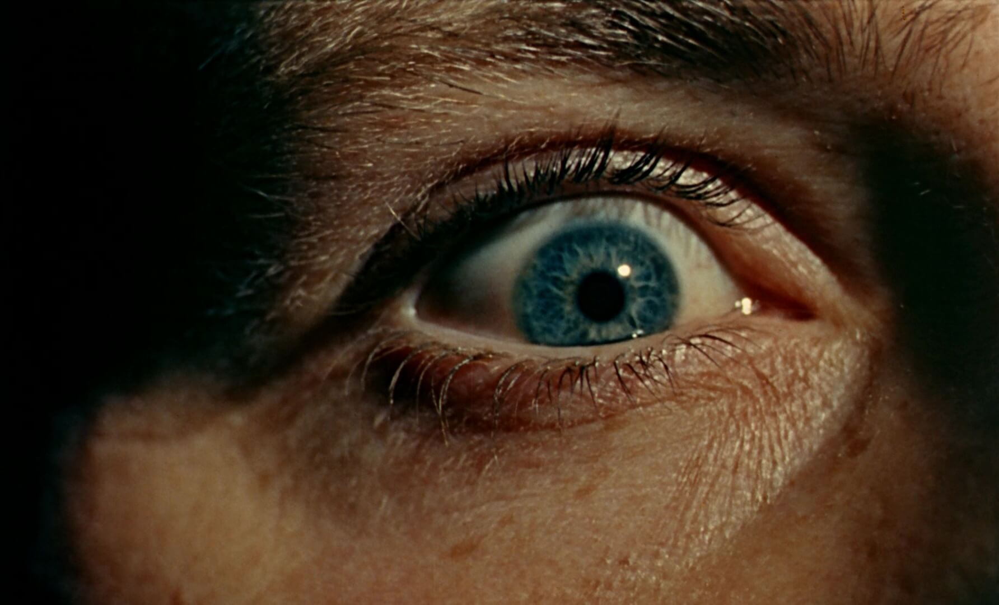

01
Wide Angle
14mm – 35mm
Captures a large area of the scene and makes the environment an important part of the story.
Feels like:🌎 Space • Energy • Scale • Immersion
THE LANGUAGE OF CINEMA
A camera does not simply record a scene. The lens decides how we experience it.
In filmmaking, lenses are more than pieces of glass. They influence perspective, depth, distance and the emotional feeling of a shot.
Choosing a lens is like choosing a visual vocabulary for a story.

14mm – 35mm
Captures a large area of the scene and makes the environment an important part of the story.
Feels like:🌎 Space • Energy • Scale • Immersion
35mm – 50mm
Produces a perspective that feels natural and familiar, making it useful for everyday scenes.
Feels like:👁️ Natural • Familiar • Realistic
70mm – 200mm+
Brings distant subjects closer and can compress the apparent distance between objects.
Feels like:🎯 Focus • Intimacy • Isolation • Drama

alt="Macro lens shot">Close-up photography
Reveals tiny details that are normally difficult to notice, turning ordinary objects into visual stories.
Feels like:🔍 Detail • Discovery • Texture
Put the audience inside the world.
Make the audience feel like they are there.
Make the audience feel like they are watching.
A story can be written with words...
And the lens decides where we look.